This gallery showcases the chart types available in WJPr using a consistent World Justice Project visual language: Lato typography, clear percentage labels, high-contrast text, restrained grid lines, and WJP brand colors. The examples use the package’s sample data and are intended to demonstrate chart structure, not to reproduce findings from a specific report.
WJP Color Palette
The WJPr package uses colors from the WJP brand system:
| Color Name | Hex Code | Usage |
|---|---|---|
| Violet (Primary) | #482d8b |
Main series, section headers, emphasis |
| Teal-Blue | #2894aa |
Secondary series and comparison groups |
| Orange | #f26b21 |
Contrast, warnings, negative or divergent values |
| Cool Gray | #555659 |
Body text, axes, notes, and supporting elements |
For categorical data visualizations, start with violet, teal-blue, and orange. When a chart needs more categories, use the established Rule of Law Index factor colors already included in this package:
#482d8b, #2894aa, #f26b21, #137b3f, #869d3b, #0f9581, #1a74b6, #8f2e8c, #555659
library(ggplot2)
library(dplyr)
library(tidyr)
library(WJPr)
# Load fonts
wjp_fonts()
# Load sample data
gpp_data <- WJPr::gpp
# WJP Color Palettes
wjp_categorical <- c(
"#482d8b", "#2894aa", "#f26b21", "#137b3f", "#869d3b",
"#0f9581", "#1a74b6", "#8f2e8c", "#555659"
)
# Colors for contrasting two groups
wjp_contrast <- c("#482d8b", "#f26b21")
# Factor colors (Rule of Law Index)
wjp_factors <- c(
"Constraints" = "#137b3f",
"Corruption" = "#869d3b",
"Open Gov" = "#0f9581",
"Rights" = "#1a74b6",
"Security" = "#413179",
"Regulatory" = "#8f2e8c",
"Civil" = "#89191c",
"Criminal" = "#f07623"
)Bar Charts
Vertical Bars
wjp_bars() - Standard vertical bar chart for comparing
values across categories.
data_bars <- gpp_data %>%
filter(year == 2022) %>%
mutate(
q1a = as.double(unclass(q1a)),
trust = case_when(q1a <= 2 ~ 1, q1a <= 4 ~ 0)
) %>%
group_by(country) %>%
summarise(trust = mean(trust, na.rm = TRUE) * 100, .groups = "drop") %>%
mutate(label = paste0(round(trust, 0), "%"), label_pos = trust + 5)
wjp_bars(
data_bars,
target = "trust",
grouping = "country",
colors = "country",
labels = "label",
lab_pos = "label_pos",
cvec = c("Atlantis" = "#482d8b", "Narnia" = "#2894aa", "Neverland" = "#f26b21")
)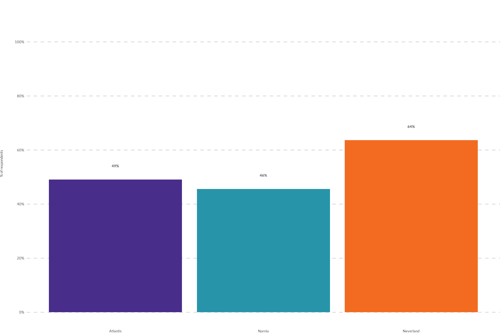
Expected input structure — one row per category,
with the value column (target) and the category column
(grouping); labels/lab_pos are
optional helpers for the data labels.
| country | trust | label | label_pos |
|---|---|---|---|
| Atlantis | 49.09091 | 49% | 54.09091 |
| Narnia | 45.65217 | 46% | 50.65217 |
| Neverland | 63.63636 | 64% | 68.63636 |
Horizontal Bars
Set direction = "horizontal" for horizontal
orientation.
wjp_bars(
data_bars,
target = "trust",
grouping = "country",
colors = "country",
labels = "label",
lab_pos = "label_pos",
cvec = c("Atlantis" = "#482d8b", "Narnia" = "#2894aa", "Neverland" = "#f26b21"),
direction = "horizontal"
)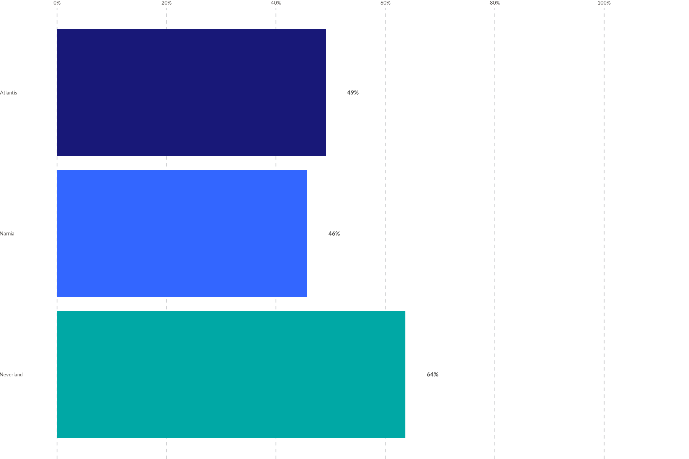
Uses the same data_bars structure shown above — only
direction = "horizontal" changes.
Diverging Bars
wjp_divbars() - Show positive and negative values
extending from a center point.
data_divbars <- gpp_data %>%
filter(year == 2022) %>%
mutate(
q1a = as.double(unclass(q1a)),
response = case_when(q1a <= 2 ~ "Trust", q1a <= 4 ~ "No Trust")
) %>%
filter(!is.na(response)) %>%
group_by(country, response) %>%
count() %>%
group_by(country) %>%
mutate(
percent = (n / sum(n)) * 100,
label = paste0(round(percent, 0), "%"),
percent = if_else(response == "No Trust", -percent, percent)
)
wjp_divbars(
data_divbars,
target = "percent",
grouping = "country",
diverging = "response",
negative = "negative",
labels = "label",
cvec = c("Trust" = "#482d8b", "No Trust" = "#f26b21")
)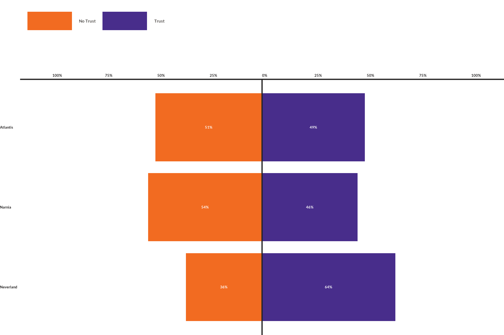
Expected input structure — one row per
grouping × diverging combination. Negative
values point left, positive values point right (percent
here is signed).
| country | response | n | percent | label |
|---|---|---|---|---|
| Atlantis | No Trust | 28 | -50.90909 | 51% |
| Atlantis | Trust | 27 | 49.09091 | 49% |
| Narnia | No Trust | 25 | -54.34783 | 54% |
| Narnia | Trust | 21 | 45.65217 | 46% |
Dots Chart
wjp_dots() - Compare multiple variables across groups
with dot markers.
data_dots <- gpp_data %>%
select(country, q1a, q1b, q1c, q1d) %>%
mutate(
across(starts_with("q1"), \(x) as.double(unclass(x))),
across(starts_with("q1"), ~ case_when(.x <= 2 ~ 1, .x <= 4 ~ 0))
) %>%
group_by(country) %>%
summarise(across(everything(), ~ mean(.x, na.rm = TRUE) * 100), .groups = "drop") %>%
pivot_longer(-country, names_to = "variable", values_to = "trust") %>%
mutate(
institution = case_when(
variable == "q1a" ~ "Police",
variable == "q1b" ~ "Courts",
variable == "q1c" ~ "Parliament",
variable == "q1d" ~ "Government"
)
)
wjp_dots(
data_dots,
target = "trust",
grouping = "institution",
colors = "country",
cvec = c("Atlantis" = "#482d8b", "Narnia" = "#2894aa", "Neverland" = "#f26b21")
)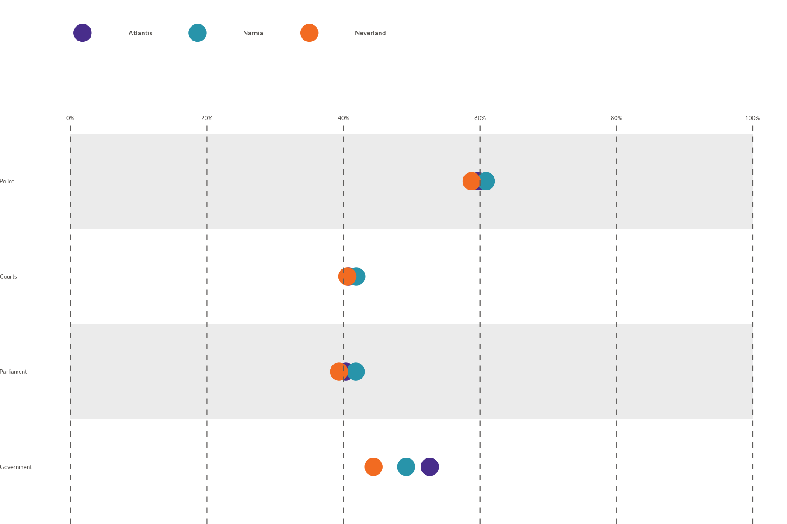
Expected input structure — long format: one row per
grouping (variable) × colors (group)
combination, each with its target value.
| country | variable | trust | institution |
|---|---|---|---|
| Atlantis | q1a | 59.75610 | Police |
| Atlantis | q1b | 40.74074 | Courts |
| Atlantis | q1c | 40.33613 | Parliament |
| Atlantis | q1d | 52.65306 | Government |
Line Chart
wjp_lines() - Display trends over time with connected
points.
library(ggrepel)
data_lines <- gpp_data %>%
filter(country == "Atlantis") %>%
select(year, q1a, q1b, q1c) %>%
mutate(
across(starts_with("q1"), \(x) as.double(unclass(x))),
across(starts_with("q1"), ~ case_when(.x <= 2 ~ 1, .x <= 4 ~ 0)),
year = as.character(year)
) %>%
group_by(year) %>%
summarise(across(everything(), ~ mean(.x, na.rm = TRUE) * 100), .groups = "drop") %>%
pivot_longer(-year, names_to = "variable", values_to = "trust") %>%
mutate(
institution = case_when(
variable == "q1a" ~ "Police",
variable == "q1b" ~ "Courts",
variable == "q1c" ~ "Parliament"
),
label = paste0(round(trust, 0), "%")
)
wjp_lines(
data_lines,
target = "trust",
grouping = "year",
ngroups = data_lines$institution,
colors = "institution",
labels = "label",
repel = TRUE,
cvec = c("Police" = "#482d8b", "Courts" = "#2894aa", "Parliament" = "#f26b21")
)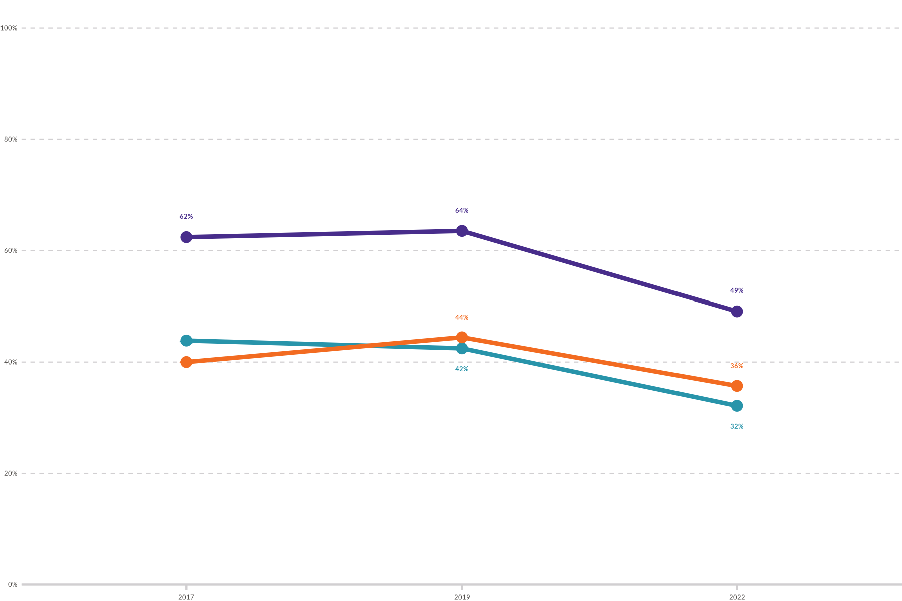
Expected input structure — long format: one row per
grouping (time point) × series. Pass the series vector
through ngroups.
| year | variable | trust | institution | label |
|---|---|---|---|---|
| 2017 | q1a | 62.39316 | Police | 62% |
| 2017 | q1b | 43.85965 | Courts | 44% |
| 2017 | q1c | 40.00000 | Parliament | 40% |
| 2019 | q1a | 63.51351 | Police | 64% |
Slope Chart
wjp_slope() - Compare values between exactly two time
points.
data_slope <- gpp_data %>%
filter(year %in% c(2017, 2019)) %>%
mutate(
q1a = as.double(unclass(q1a)),
gend = as.double(unclass(gend)),
trust = case_when(q1a <= 2 ~ 1, q1a <= 4 ~ 0),
gender = case_when(gend == 1 ~ "Male", gend == 2 ~ "Female")
) %>%
group_by(year, gender) %>%
summarise(trust = mean(trust, na.rm = TRUE) * 100, .groups = "drop") %>%
mutate(label = paste0(round(trust, 0), "%"))
wjp_slope(
data_slope,
target = "trust",
grouping = "year",
ngroups = data_slope$gender,
colors = "gender",
labels = "label",
cvec = c("Male" = "#482d8b", "Female" = "#f26b21"),
repel = TRUE
)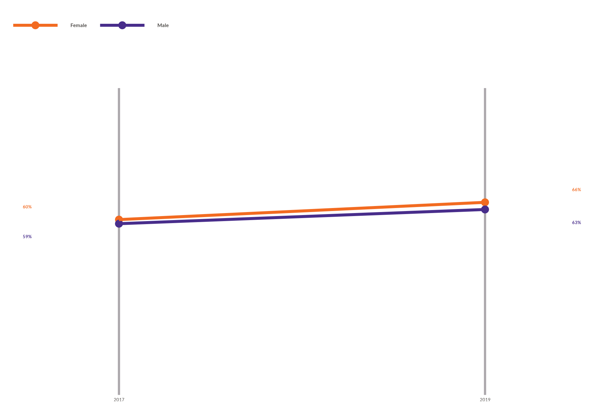
Expected input structure — exactly two
grouping values (the two time points) per series. Pass the
series vector through ngroups.
| year | gender | trust | label |
|---|---|---|---|
| 2017 | Female | 60.00000 | 60% |
| 2017 | Male | 58.59873 | 59% |
| 2019 | Female | 65.90909 | 66% |
| 2019 | Male | 63.46154 | 63% |
Dumbbell Chart
wjp_dumbbells() - Show change between two points with
connected markers.
data_dumbbells <- data_lines %>%
filter(year %in% c("2017", "2022"))
wjp_dumbbells(
data_dumbbells,
target = "trust",
grouping = "institution",
color = "year",
cgroups = c("2017", "2022"),
cvec = c("2017" = "#2894aa", "2022" = "#482d8b")
)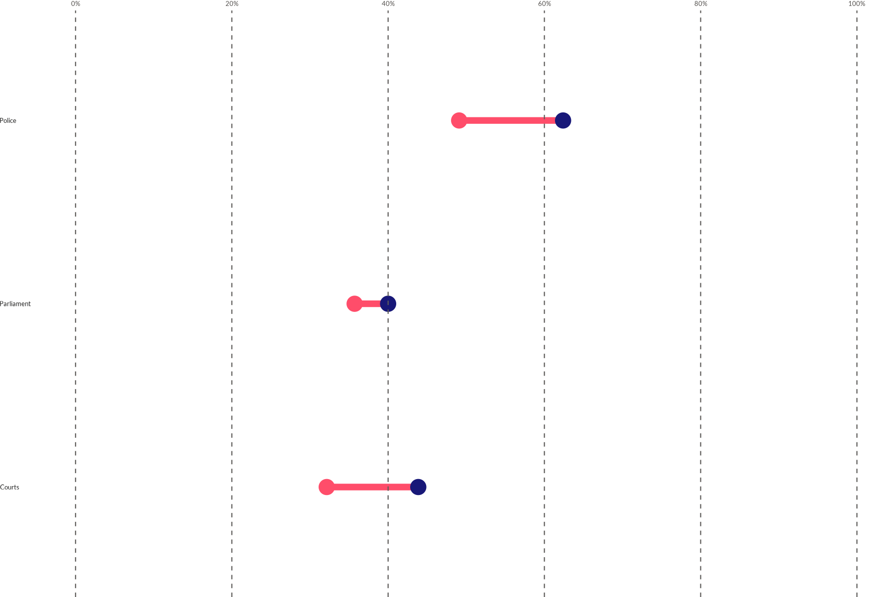
Expected input structure — one row per
grouping × color (the two endpoints).
cgroups lists the two endpoint values.
| year | variable | trust | institution | label |
|---|---|---|---|---|
| 2017 | q1a | 62.39316 | Police | 62% |
| 2017 | q1b | 43.85965 | Courts | 44% |
| 2017 | q1c | 40.00000 | Parliament | 40% |
| 2022 | q1a | 49.09091 | Police | 49% |
Lollipop Chart
wjp_lollipops() - Minimalist bar alternative with stems
and dots.
wjp_lollipops(
data_bars,
target = "trust",
grouping = "country",
line_color = "#555659",
point_color = "#482d8b"
)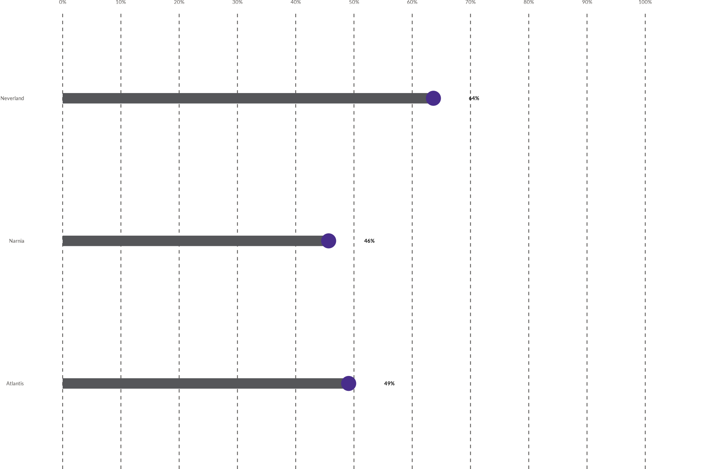
Uses the same data_bars structure (one row per category
with a target value) shown under Bar
Charts.
Edgebars Chart
wjp_edgebars() - Horizontal bars with labels at the
edge, ideal for narrow spaces.
wjp_edgebars(
data_bars,
target = "trust",
grouping = "country",
labels = "country",
cvec = "#2894aa"
)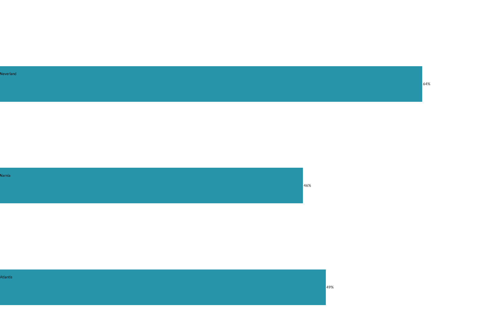
Uses the same data_bars structure shown under
Bar Charts; labels supplies the text drawn
at the edge of each bar.
Radar Chart
wjp_radar() - Compare multiple dimensions on a circular
grid.
data_radar <- gpp_data %>%
select(gend, starts_with("q49")) %>%
mutate(
gend = as.double(unclass(gend)),
across(starts_with("q49"), \(x) as.double(unclass(x))),
gender = case_when(gend == 1 ~ "Male", gend == 2 ~ "Female"),
across(starts_with("q49"), ~ case_when(.x <= 2 ~ 1, .x <= 99 ~ 0))
) %>%
group_by(gender) %>%
summarise(across(starts_with("q49"), ~ mean(.x, na.rm = TRUE) * 100), .groups = "drop") %>%
pivot_longer(-gender, names_to = "category", values_to = "score") %>%
mutate(
label = case_when(
category == "q49a" ~ "Reliable",
category == "q49b_G1" ~ "Accessible",
category == "q49b_G2" ~ "Channels",
category == "q49c_G1" ~ "Consistent",
category == "q49c_G2" ~ "Stable",
category == "q49d_G1" ~ "Efficient",
category == "q49d_G2" ~ "Fast",
category == "q49e_G1" ~ "Effective",
category == "q49e_G2" ~ "Trustworthy"
)
)
wjp_radar(
data_radar,
axis_var = "category",
target = "score",
labels = "label",
colors = "gender",
cvec = c("Male" = "#482d8b", "Female" = "#f26b21")
)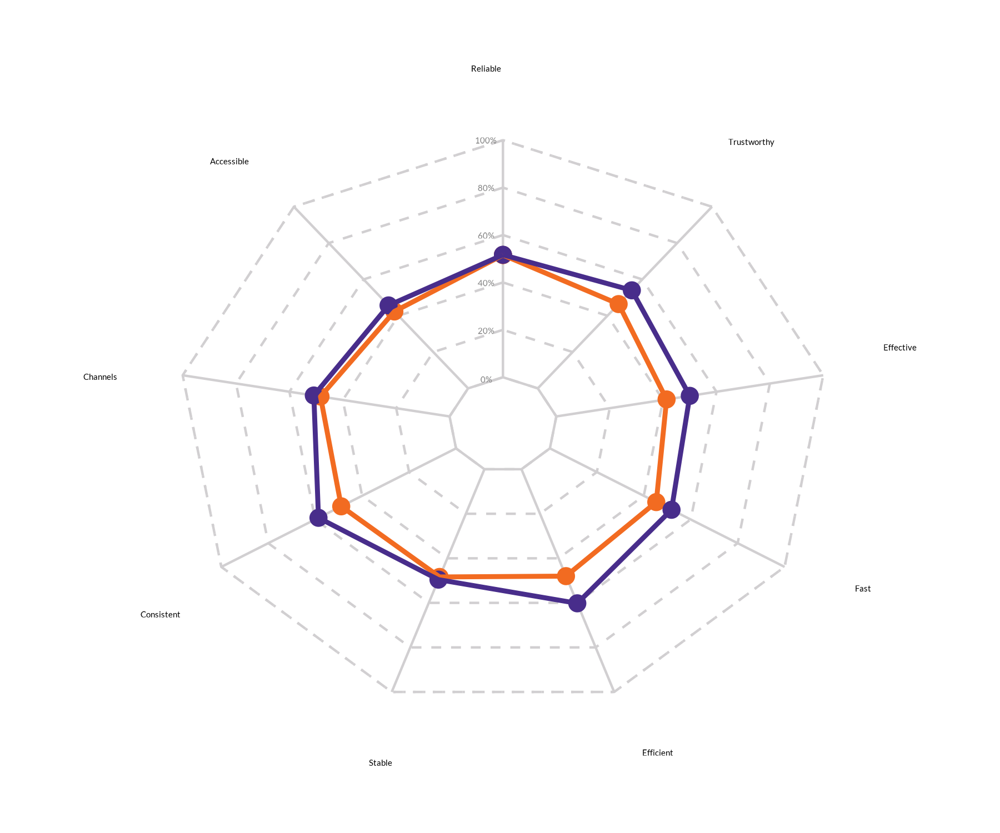
Expected input structure — long format: one row per
axis_var (dimension) × colors (group).
labels gives the human-readable axis name.
| gender | category | score | label |
|---|---|---|---|
| Female | q49a | 51.57480 | Reliable |
| Female | q49b_G1 | 42.33577 | Accessible |
| Female | q49b_G2 | 48.36601 | Channels |
| Female | q49c_G1 | 48.90511 | Consistent |
Rose Chart
wjp_rose() - Circular bar chart for single-unit
multi-dimensional data.
data_rose <- data_radar %>%
filter(gender == "Male")
wjp_rose(
data_rose,
target = "score",
grouping = "category",
labels = "label",
cvec = c("#482d8b", "#2894aa", "#f26b21", "#137b3f", "#869d3b",
"#0f9581", "#1a74b6", "#8f2e8c", "#555659")
)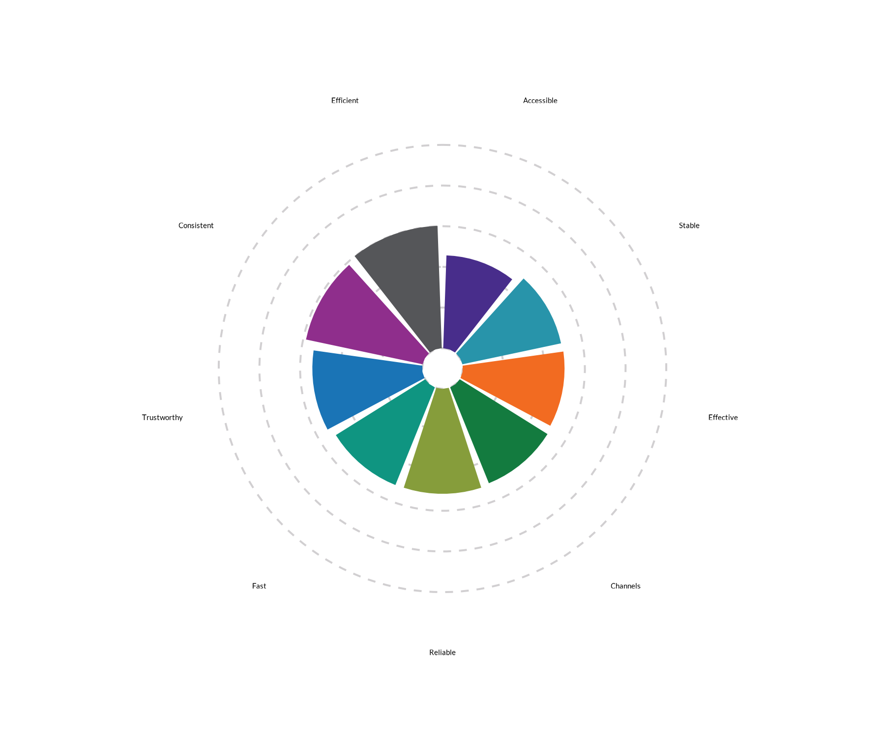
Expected input structure — a single unit: one row
per grouping (dimension) with its target value
and a display label.
| gender | category | score | label |
|---|---|---|---|
| Male | q49a | 51.64319 | Reliable |
| Male | q49b_G1 | 45.66929 | Accessible |
| Male | q49b_G2 | 50.86207 | Channels |
| Male | q49c_G1 | 58.59375 | Consistent |
Gauge Chart
wjp_gauge() - Semicircular chart for showing composition
or progress.
data_gauge <- data.frame(
category = c("Factor 1", "Factor 2", "Factor 3", "Factor 4"),
value = c(25, 35, 25, 15),
label = c("25%", "35%", "25%", "15%")
)
wjp_gauge(
data_gauge,
target = "value",
colors = "category",
cvec = c("Factor 1" = "#482d8b", "Factor 2" = "#2894aa",
"Factor 3" = "#f26b21", "Factor 4" = "#555659"),
factor_order = c("Factor 1", "Factor 2", "Factor 3", "Factor 4"),
labels = "label"
)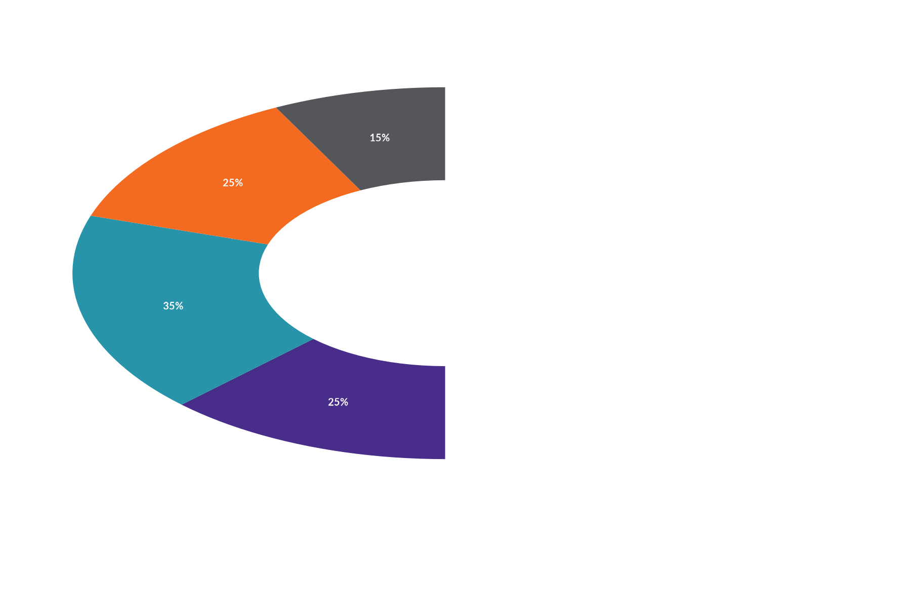
Expected input structure — one row per slice: a
colors category, its target value, and a
display label. factor_order controls the
drawing order.
| category | value | label |
|---|---|---|
| Factor 1 | 25 | 25% |
| Factor 2 | 35 | 35% |
| Factor 3 | 25 | 25% |
| Factor 4 | 15 | 15% |
Grouped Bars
wjp_groupbars() - Faceted bars that compare a value
across demographic groups (one facet per grouping). Values
can be supplied as proportions (0-1) or percentages
(0-100). Confidence intervals can be calculated from
sd and sample_size, or supplied directly with
ci_lower and ci_upper. A national/general
value can be added either as its own bar
(national_style = "bar") or as a vertical reference line
(national_style = "line").
# Percentage-scale input with precomputed confidence intervals.
data_groupbars <- data.frame(
group = c("Gender", "Gender", "Age", "Age", "Age"),
category = c("Men", "Women", "18-24", "25-54", "55+"),
value = c(74.4, 70.3, 72.1, 73.1, 73.0),
lower = c(72.4, 68.4, 70.1, 71.0, 70.8),
upper = c(76.4, 72.1, 74.5, 75.2, 75.2)
)
wjp_groupbars(
data_groupbars,
target = "value",
grouping = "group",
levels = "category",
colors = c("#482d8b", "#e5e8e8"),
group_order = c("Gender", "Age"),
level_order = list(
Gender = c("Women", "Men"),
Age = c("55+", "25-54", "18-24")
),
draw_ci = TRUE,
ci_lower = "lower",
ci_upper = "upper",
show_national = TRUE,
national_value = 72.3,
national_style = "bar",
national_label = "National Average",
national_ci_lower = 70.0,
national_ci_upper = 74.6,
show_axis = TRUE
)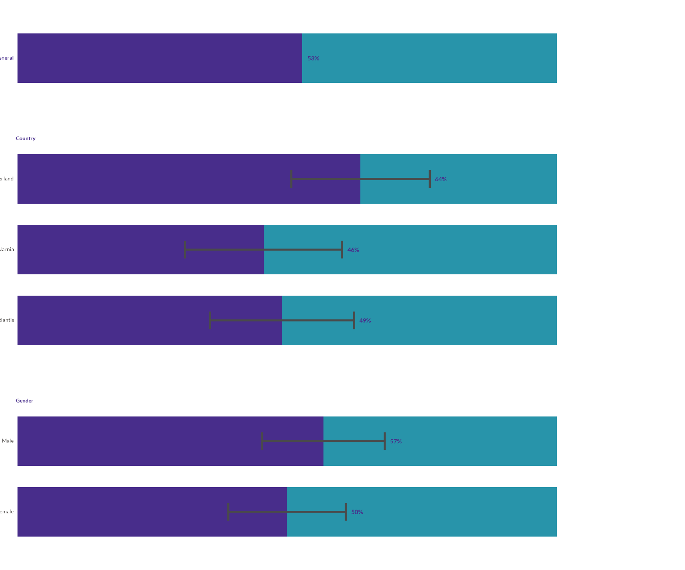
Expected input structure — one row per
levels category, tagged with the grouping
(facet) it belongs to and its target value.
target, national_value, ci_lower,
and ci_upper may be proportions or percentages. To draw a
confidence interval on each bar, set draw_ci = TRUE and
either supply per-category sd plus
sample_size, or pass precomputed ci_lower and
ci_upper columns. When national_style = "bar",
the national value is inserted as a regular bar row and can receive its
own national_ci_lower and national_ci_upper.
The second color represents the complement to 100%, so a neutral gray
keeps attention on the measured percentage and its interval.
| group | category | value | lower | upper |
|---|---|---|---|---|
| Gender | Men | 74.4 | 72.4 | 76.4 |
| Gender | Women | 70.3 | 68.4 | 72.1 |
| Age | 18-24 | 72.1 | 70.1 | 74.5 |
| Age | 25-54 | 73.1 | 71.0 | 75.2 |
| Age | 55+ | 73.0 | 70.8 | 75.2 |
Quick Reference
| Chart | Function | Best For |
|---|---|---|
| Vertical Bars | wjp_bars() |
Comparing values across categories |
| Horizontal Bars | wjp_bars(direction = "horizontal") |
Long category names |
| Diverging Bars | wjp_divbars() |
Positive/negative comparisons |
| Dots | wjp_dots() |
Multiple groups, multiple variables |
| Lines | wjp_lines() |
Trends over time |
| Slope | wjp_slope() |
Change between two time points |
| Dumbbells | wjp_dumbbells() |
Before/after comparisons |
| Lollipops | wjp_lollipops() |
Minimalist bar alternative |
| Edgebars | wjp_edgebars() |
Narrow spaces, long labels |
| Radar | wjp_radar() |
Multi-dimensional group comparison |
| Rose | wjp_rose() |
Multi-dimensional single unit |
| Gauge | wjp_gauge() |
Composition, progress |
| Grouped Bars | wjp_groupbars() |
Compare a value across demographic groups |